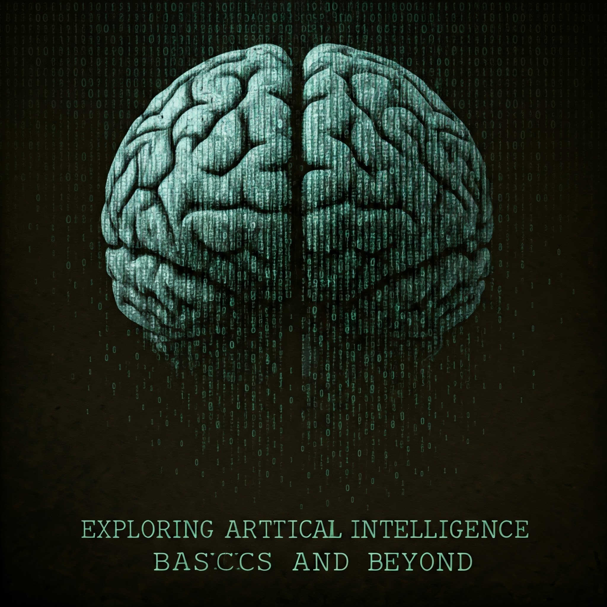

Cloud computing has transformed the way businesses and individuals manage, store, and access data. This revolutionary technology allows users to access computing resources—such as servers, storage, and applications—over the internet, eliminating the need for costly on-premises hardware. Its scalability and flexibility make it ideal for businesses of all sizes, enabling them to adjust their resources based on demand without the constraints of physical infrastructure. Whether it’s hosting websites, analyzing large datasets, or developing applications, cloud computing has become a cornerstone of modern IT operations.
One of the primary drivers of the cloud computing revolution is its cost-efficiency. By leveraging pay-as-you-go models, companies only pay for the resources they use, significantly reducing operational expenses. Additionally, cloud providers like AWS, Google Cloud, and Microsoft Azure offer advanced tools and services, including AI and machine learning capabilities, database management, and serverless computing. These features empower businesses to innovate faster, improve productivity, and compete in the digital economy. The ability to automate tasks and access cutting-edge technologies has also made cloud computing indispensable for industries like healthcare, finance, and education.
The accessibility and collaboration capabilities of cloud computing have redefined the way teams work. With tools like Google Workspace, Microsoft 365, and Dropbox, employees can collaborate in real time, irrespective of their location. This has been particularly beneficial in the era of remote work, ensuring business continuity and fostering global collaboration. Cloud platforms also provide robust security measures, including data encryption, identity management, and compliance frameworks, to protect sensitive information. These security features, combined with disaster recovery solutions, offer peace of mind to organizations handling critical data.
As cloud computing continues to evolve, its impact is expanding beyond traditional IT applications. Edge computing, hybrid cloud solutions, and multi-cloud strategies are pushing the boundaries of what’s possible. Edge computing enables faster data processing by bringing computation closer to the data source, while hybrid clouds offer a blend of on-premises and cloud environments for maximum flexibility. Multi-cloud strategies allow businesses to use multiple cloud providers to avoid vendor lock-in and ensure reliability. The future also promises greater integration with emerging technologies like IoT, AI, and blockchain, further enhancing the cloud’s potential. For individuals and businesses alike, embracing cloud computing is no longer optional—it’s essential for staying competitive in today’s fast-paced, technology-driven world.